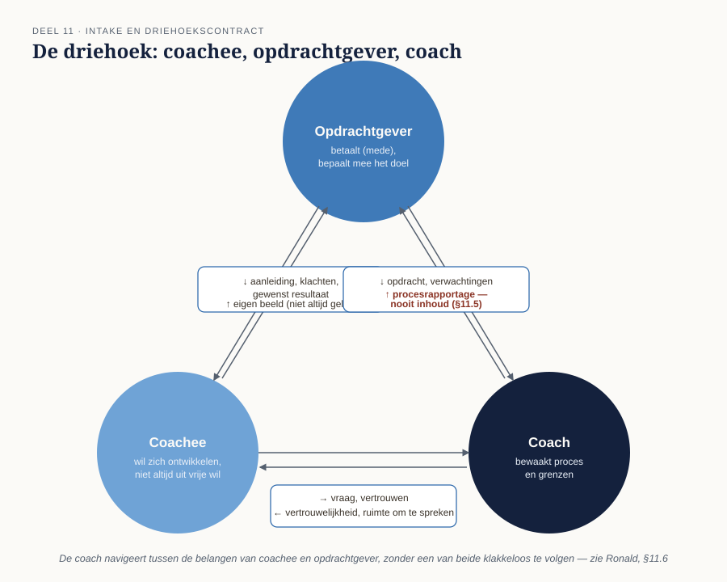
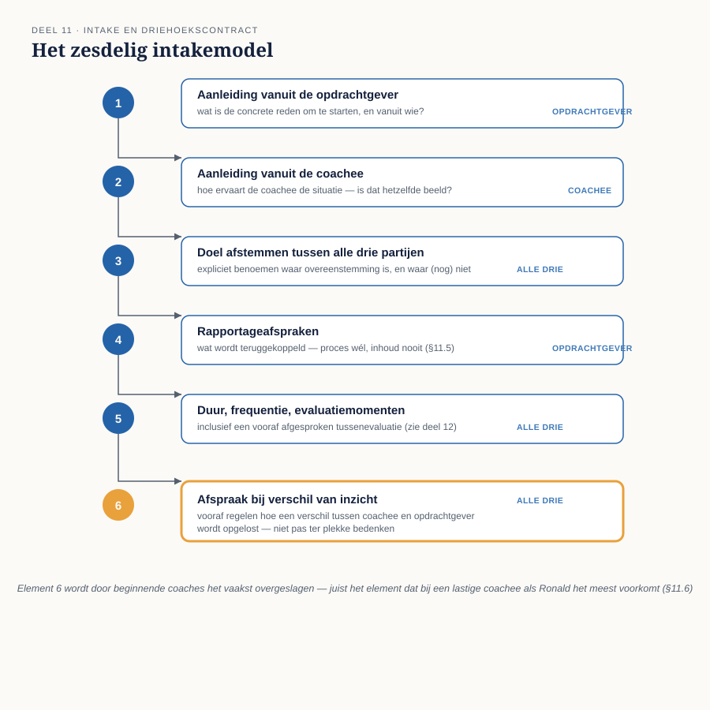

Cursus Coachen · Niveau 2 (NOBCO/EMCC EIA Practitioner · ICF Level 2) · Deel 11 van 30
Intake en driehoekscontract
Niveau 2 begint waar niveau 1 het contracteren losliet: bij één partij, coach en coachee samen. In de praktijk komt een groot deel van de coachvraag echter via een derde partij — een werkgever die (mede) betaalt en een eigen beeld heeft van het gewenste resultaat. Dit deel voegt die derde partij toe: een zesdelig intakemodel, contra-indicaties die specifiek zijn voor de driehoek, en de scherpste vertrouwelijkheidsvraag van de hele cursus — met Ronald als hoofdcasus.
7secties
±3uleestijd + werkboek
2controlevragen
2nieuwe figuren
Positionering. Deze cursus bereidt voor op twee routes tegelijk — het EMCC Competence Framework (NOBCO/EMCC EIA) en de ICF Core Competencies — en vervangt geen van beide officiële trajecten. Studeer voor een accreditatie of credential altijd óók het bronmateriaal van NOBCO/EMCC of ICF zelf.
Niveau 2: ➊ Intake en driehoekscontract (hier) → ➋ Traject ontwerpen → ➌ Oplossingsgericht coachen → ➍ Cognitieve invalshoek → ➎ Transactionele analyse → ➏ Systemisch werken → ➐ Werken met emoties → ➑ Lichaam en non-verbaal → ➒ Patronen en overtuigingen → ➓ Weerstand en stagnatie → ⓫ Instrumenten verantwoord inzetten → ⓬ Intervisie en tussenassessment
01
Van tweepartijen- naar driehoekscontract
⏱ 15 min
Deel 3 (niveau 1) behandelde het basiscontract tussen coach en coachee — met Aisha als "schone" casus, één partij, geen conflicterende belangen. In de praktijk komt echter een substantieel deel van de coachvraag via een derde partij: een werkgever die betaalt en (mede) het doel bepaalt. Dit deel voegt die derde partij toe, met Ronald als hoofdcasus.
Aan het eind van dit deel kunt u:
de belangen van coachee, opdrachtgever en coach naast elkaar plaatsen;
het zesdelig intakemodel toepassen op een driehoekssituatie;
absolute van relatieve contra-indicaties onderscheiden;
het onderscheid tussen proces- en inhoudsrapportage bewaken, ook onder druk van een opdrachtgever.
02
De drie partijen en hun belang
⏱ 20 min
Coachee — wil zich ontwikkelen, of wil er in elk geval doorheen komen; niet altijd uit vrije wil gestart.
Opdrachtgever (werkgever, leidinggevende, HR) — betaalt (mede), heeft vaak een eigen beeld van het gewenste resultaat, en verwacht soms een vorm van terugkoppeling.
Coach — bewaakt het proces en de grenzen, en moet expliciet navigeren tussen de belangen van de andere twee zonder een van beide klakkeloos te volgen.

Figuur 11-1 — de driehoek: coachee, opdrachtgever en coach, met de belangrijkste informatiestromen
03
Het zesdelig intakemodel
⏱ 30 min
Waar het eerste gesprek in deel 3 vijf stappen had, breidt de intake bij een driehoekscontract uit naar zes elementen:
Aanleiding vanuit de opdrachtgever — wat is de concrete reden dat dit traject wordt gestart, en vanuit wie?
Aanleiding vanuit de coachee — hoe ervaart de coachee zelf de situatie, en is dat hetzelfde beeld?
Doel afstemmen tussen alle drie partijen — expliciet benoemen waar overeenstemming is en waar (nog) niet.
Rapportageafspraken — wat wordt er wél en niet teruggekoppeld aan de opdrachtgever, en hoe (proces vs. inhoud, zie §5).
Duur, frequentie, evaluatiemomenten — inclusief een vooraf afgesproken tussenevaluatie waarbij (indien afgesproken) de opdrachtgever aanschuift.
Wat er gebeurt bij een verschil van inzicht tussen coachee en opdrachtgever tijdens het traject — vooraf afspreken hoe dat wordt opgelost, in plaats van dit gesprek pas te voeren wanneer het zich voordoet.

Figuur 11-2 — het zesdelig intakemodel als stroomdiagram
Meest overgeslagen element
Element 6 (afspraak bij verschil van inzicht) wordt door beginnende coaches het vaakst overgeslagen — precies het element dat in de praktijk het meest voorkomt bij een lastige coachee als Ronald.
04
Contra-indicaties bij een driehoekscontract
⏱ 20 min
Naast de signalen uit deel 9 (basis, met Femke) zijn er contra-indicaties die specifiek zijn voor de driehoekssituatie:
Soort
Omschrijving
Gevolg
Absoluut
De opdrachtgever eist inhoudelijke rapportage over wat er in de sessies besproken wordt.
Onverenigbaar met coaching (zie §5) — een traject start niet, of pas nadat dit is opgelost.
Relatief
De coachee geeft aan het traject niet zelf te willen, maar is bereid het te proberen.
Geen automatische weigergrond, maar vraagt extra aandacht bij element 2 en 3: is er, ondanks de externe aanleiding, een authentieke opening te vinden?
05
Vertrouwelijkheid in de driehoek
⏱ 25 min
Dit is het scherpste punt van elk driehoekscontract: de coach rapporteert over het proces, nooit over de inhoud. Procesrapportage is bijvoorbeeld: "het traject verloopt volgens planning, we zijn aan sessie vier van de zes." Inhoudsrapportage — wat wél of niet is gezegd, welke onderwerpen zijn besproken — is nooit toegestaan zonder expliciete, geïnformeerde toestemming van de coachee voor dát specifieke stuk informatie.
Dit onderscheid moet al bij de intake, met alle drie partijen aanwezig of geïnformeerd, hardop worden gemaakt — niet stilzwijgend verondersteld.
Bij twijfel: als de zin iets zegt over wát er besproken is, is het inhoud
Ook een globale thematische aanduiding ("worstelt met feedback geven") is al inhoud, geen proces — ook al klinkt het onschuldig en algemeen.
Controlevraag
Uit Werkboek deel 11, Opdracht 11.2 — Proces vs. inhoud
1Sorteer als toegestane procesrapportage of niet-toegestane inhoudsrapportage: (1) "We zijn nu bij de vierde van zes sessies." (2) "Ronald gaf aan dat hij zijn manager niet vertrouwt." (3) "Het traject verloopt volgens de afgesproken planning." (4) "Ronald worstelt vooral met het geven van directe feedback aan zijn team."Toon antwoord
(1) Proces — toegestaan. (2) Inhoud — niet toegestaan. (3) Proces — toegestaan. (4) Inhoud — niet toegestaan, ook al klinkt het "onschuldig" en algemeen: zelfs een globale thematische aanduiding is al inhoud, geen proces.
06
Toepassing: Ronald en Yusuf
⏱ 30 min
Ronald is naar coaching gestuurd door zijn werkgever na klachten over zijn manier van leidinggeven. Bij element 1 (aanleiding vanuit opdrachtgever) meldt de manager concrete klachten; bij element 2 blijkt Ronald zelf een ander, minder scherp beeld te hebben van wat er precies mis zou zijn. Dit verschil wordt niet toegedekt maar expliciet benoemd bij element 3. De coach maakt bij element 4 vooraf glashard duidelijk: er komt een procesrapportage na sessie drie en na afronding, geen inhoudelijk verslag.
Herinner u opdracht 2.2 (deel 2) over uw eigen reactiviteit bij Ronald — die reactiviteit is hier extra relevant, omdat de druk vanuit de opdrachtgever de verleiding kan vergroten om Ronald "te overtuigen" in plaats van coachend te begeleiden.
Yusuf — een driehoekscontract dat scheefgroeit
Yusuf is een mini-casus uit het casusdossier: de leidinggevende belt de coach rechtstreeks voor een tussentijds oordeel — een weigercasus vertrouwelijkheid.
Controlevraag
Uit Werkboek deel 11, Opdracht 11.3 — Yusuf: de scheefgroeiende situatie
1De leidinggevende van Yusuf belt de coach rechtstreeks voor een tussentijds oordeel. Wat zegt de coach, zodat de grens uit §5 wordt bewaakt zonder de relatie met de opdrachtgever onnodig op scherp te zetten?Toon antwoord
Een goed antwoord erkent de bezorgdheid van de leidinggevende, herhaalt de bij de intake gemaakte afspraak (element 4 van het intakemodel), en biedt het alternatief van de geplande procesrapportage aan in plaats van een ad-hoc telefonisch "oordeel" — bijvoorbeeld: "Ik snap dat u wilt weten hoe het gaat. Zoals afgesproken bij de start deel ik geen inhoud van de sessies, wél de procesrapportage na sessie drie, die er volgende week aankomt. Als er een concrete zorg is over de samenwerking nu, kan ik die vorm los van de sessie-inhoud met u bespreken." Vermijd een defensieve of overmatig verontschuldigende toon — vergelijkbaar met het aandachtspunt bij het doorverwijsgesprek uit deel 9.
07
Samenvatting
⏱ 10 min
Het basiscontract (deel 3) wordt bij een derde partij een driehoekscontract met een zesdelig intakemodel.
Contra-indicaties: absoluut bij een eis tot inhoudelijke rapportage; relatief bij een coachee die niet uit vrije wil komt.
Vertrouwelijkheid in de driehoek: proces wel, inhoud nooit zonder expliciete toestemming.
Ronald is de hoofdcasus van dit deel — met een directe koppeling naar de eigen reactiviteitsopdracht uit deel 2; Yusuf illustreert een scheefgroeiende situatie.
Reflectievragen — geen antwoordsleutel
Welk element van het zesdelig intakemodel zou u, zonder deze cursus, het snelst zijn vergeten toe te voegen aan een tweepartijencontract? En wat maakt het onderscheid tussen procesrapportage en inhoudsrapportage in de praktijk soms lastiger dan het in theorie klinkt?
Verder naar deel 12
Deel 12 schaalt op van één sessie naar een heel traject: hoeveel sessies, wanneer een tussenevaluatie, en hoe u — zonder in kwakzalverij te vervallen — enig zicht krijgt op effect.